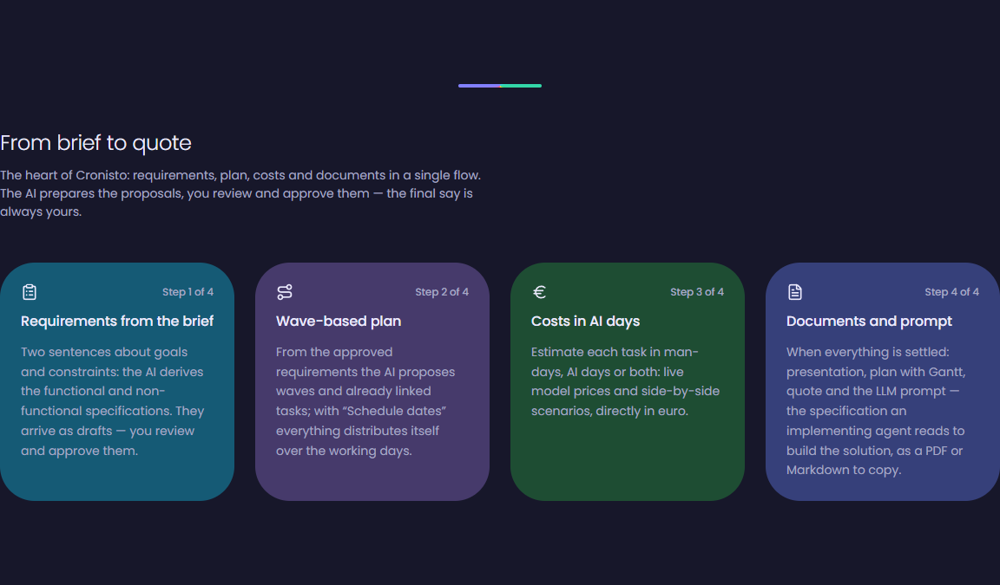

PROJECT MANAGEMENT, ASSISTITO DALL'AI
Le idee
diventano
progetti.
Dai forma al brief. Collega le decisioni.
Porta il lavoro fino all'esecuzione.
Cronisto e' in beta su invito.

01 / IL PUNTO DI PARTENZA
Un progetto.
Troppe informazioni sparse.
Brief nei documenti. Decisioni nelle chat. Stime nei fogli.
Cronisto collega cio' che serve per passare all'azione.
02 / ESPLORA IL PERCORSO
Un brief.
Un intero progetto.
Segui le informazioni mentre prendono forma.
Scegli un esempio, poi esplora ogni passaggio.
IL PUNTO DI PARTENZA
Basta un'idea
da chiarire.
Descrivi cosa vuoi ottenere, per chi e con quali vincoli. Il brief e' il primo contesto condiviso.
03 / INTELLIGENZA ARTIFICIALE, GIUDIZIO UMANO
L'AI da' forma.
Tu dai la direzione.
Requisiti, piani, stime e riassunti: l'AI prepara proposte che puoi rivedere. L'approvazione finale resta tua.
Proposte sempre in bozza
Revisione prima dell'approvazione
Controllo sulle decisioni
REQUISITI DEL PORTALE CLIENTI
Il brief comincia
a diventare chiaro.
Interazione dimostrativa. Nessuna AI viene eseguita.
04 / STIME DA SPIEGARE, OFFERTE DA DISCUTERE
Un piano.
Piu' modi di realizzarlo.
Confronta il contributo delle persone e dell'AI.
Rendi esplicite le ipotesi prima di formulare l'offerta.
05 / IL CONTESTO ACCOMPAGNA IL LAVORO
Dalla proposta
a chi la realizza.
Documenti per il cliente. Prompt per il team o un agente AI.
Attivita' e decisioni nello stesso spazio operativo.
Proporre
Presentazione del progetto
Offerta con gli scenari scelti
Affidare
Piano dettagliato con Gantt
Prompt anche in Markdown
Realizzare
Task, assegnazioni e scadenze
Commenti e decisioni con storico
Proprietari e membri autorizzati. Applicazione non indicizzata.
Per ogni allegato privato.
Storico dei backup giornalieri cifrati.
Agenti esterni con i permessi dell'utente. Azioni tracciate.
06 / DOVE PUO' FARE LA DIFFERENZA
Il tuo prossimo
progetto, piu' chiaro.
Per chi deve definire, proporre e coordinare il lavoro.
Agenzie digitali
Collega il brief del cliente al piano e all'offerta. Mantieni visibili le richieste mentre il progetto passa dal commerciale al team.
Software house
Collega requisiti funzionali e non funzionali alle attivita'. Rendi visibili copertura, dipendenze e decisioni tecniche.
Consulenti e PM freelance
Struttura proposte, stime e consegne. Coordina risorse interne ed esterne e riutilizza progetti esistenti come template.
Team prodotto
Conserva il contesto delle decisioni e segui priorita' e avanzamento. Ritrova attivita', commenti e allegati nel progetto.
Aziende e fornitori
Allinea chi richiede il lavoro e chi lo realizza. Condividi documenti, assegna attivita' e rendi consultabili le decisioni.
IL PROSSIMO PASSO E' UN PROGETTO REALE
La tua idea.
Il suo prossimo passo.
Porta un brief da chiarire.
Scopri Cronisto e richiedi una demo.